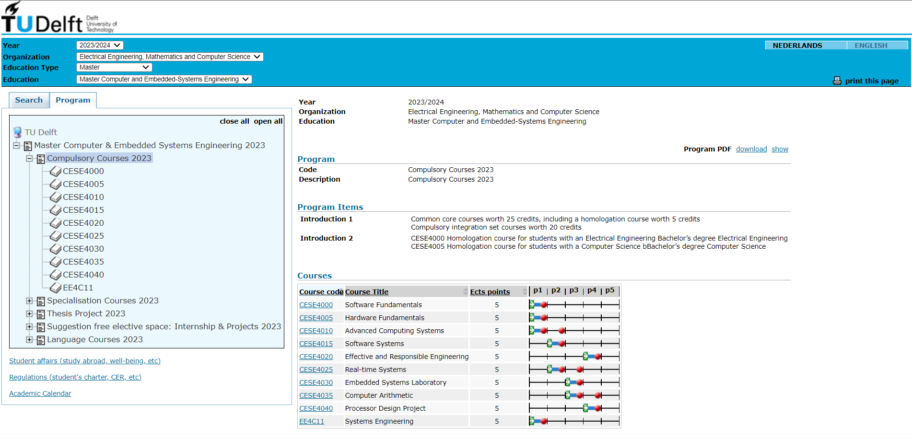
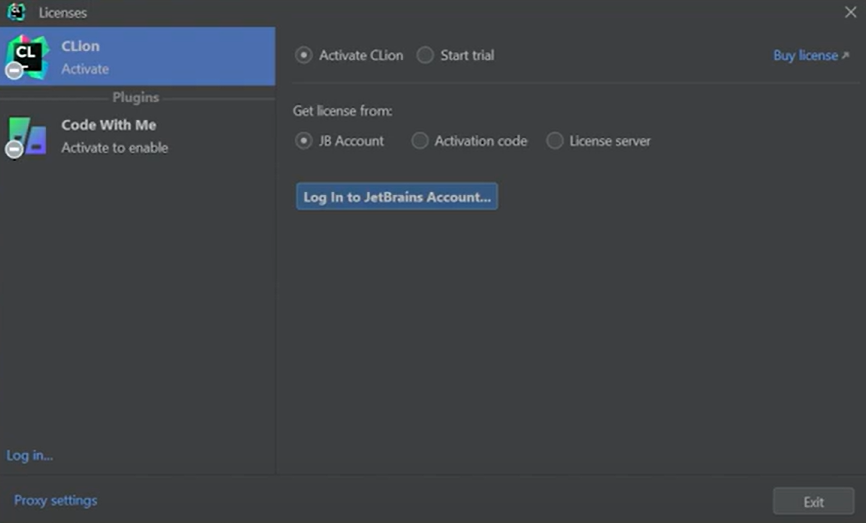
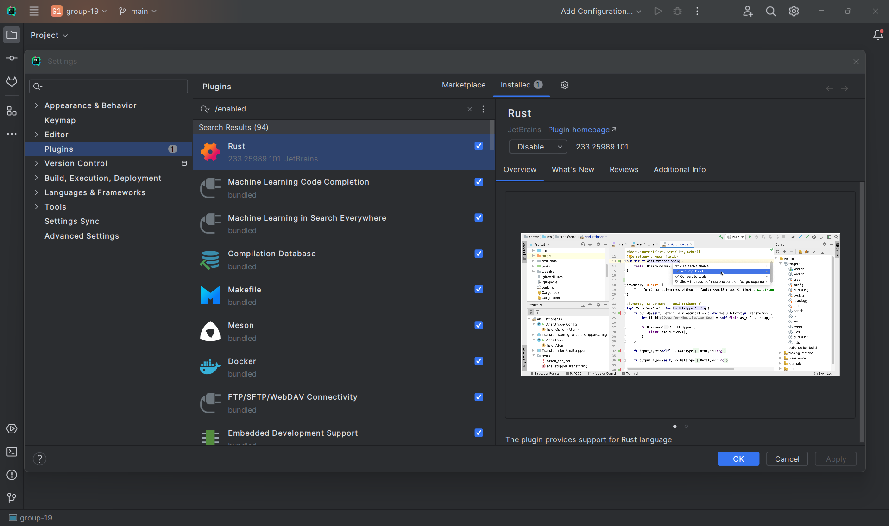

Your Unofficial Guide to EEMCS in TU Delft
Entering the Faculty of Electrical Engineering, Mathematics, and Computer Science (EEMCS) at TU Delft can be thrilling and demanding. To excel in this rigorous environment, feel free to follow this unofficial guide to EEMCS.
📋 Table of Contents
Curriculum in EEMCS - CESE
NEW UPDATE: The new study guide starting from the 2025-2026 academic year provides information about the curriculum at https://studyguide.tudelft.nl/
One of the most informative website is the course browser search. By following the search parameters, you will know the compulsory courses that you have to take in EEMCS - Computer and Embedded Systems Engineering Masters. Please note that if your Bachelors Specialization was in Electrical Engineering, you are required to take Software Fundamentals and vice versa, Computer Science undergraduates would need to take Hardware Fundamentals in Semester 1.

Alternate View of Programme Courses
First Year (60 EC)
| Q1 | Q2 | Q3 | Q4 |
|---|---|---|---|
| Adv. Computing Systems 5 EC | Real Time Systems 5 EC | Embedded Systems Lab 5 EC | Effective & Responsible Engineering 5 EC |
| Systems Engineering 5 EC | Software Systems 5 EC | Computer Arithmetic 5 EC | Processor Design Project 5 EC |
| Software / Hardware Fundamentals 5 EC | Specialization 5 EC | Specialization 5 EC | Specialization 5 EC |
Second Year (60 EC)
| Q1 | Q2 | Q3 | Q4 |
|---|---|---|---|
| Joint Interdisciplinary Project or | Thesis Project 45 EC | ||
| Internship or Elective Courses 15 EC |
Then you go to Brightspace to enrol into the courses. Attend the lectures and finish all the assignments, quizzes, tests and exams to attain the necessary credits. 60 Credits are required for Year 1 and another 60 Credits for Year 2.
TU Delft students need to fill up the Individual Exam Programme (IEP) along the course of their studies. This is the medium to report your desired track and obtain approval from
- Masters Coordinator
- Thesis Advisor
- Board of Examiners
Essential - Laptops
TU Delft provides laptop advice and sale of laptops for your study at https://www.tudelft.nl/en/student/my-study-me/study-tools/laptop-project/models-2025-2026
Essential - Operating System
In the CESE Masters Programme, you will be working on projects that require Linux. The teaching team strongly recommend using it. Based on experience, it is best to NOT deviate from that recommendation.
A stable version Ubuntu 22.04 has been used for many projects and thus been recommended for basic beginners to use. Ubuntu 22.04 ISO file can be downloaded here.
To install it, follow this tutorial by Ubuntu. This method uses a 12GB or above thumb-drive which renders it useless as a portable conventional storage media device. Do not delete the Ubuntu 22.04 USB stick as you or your friends will consistently need to reinstall Linux if IRREVERSIBLE mistakes causes failure in your project to run.
Essential - Software
In the CESE Masters Programme, you will be programming in RUST. For starters, a common IDE used by many is VSCode. Let me share with you a competitive IDE called CLion.
1A - CLion Integrated Development Environment (IDE)
https://www.jetbrains.com/help/clion/installation-guide.html#toolbox
For Electrical Engineers, the JetBrains Toolbox App is the recommended tool to install JetBrains products.
However, if you are comfortable with installing it via the command line terminal, feel free to install using the Standalone Installation method.
To enable CLion, you first need to register a free student account with your student email. With your new student account, you can login to activate your JetBrains account on CLion.

Install the Rust Plugin. Access the Plugin Window via the Settings Gear icon on the top-right of CLion IDE Window.

2 - LaTeX
Most (if not all) projects require a report to be written to consolidate all the work done. Although small assignments only require 1-2 pages in the report, most (if not all) projects usually require 4 - 20 pages in the report. In fact, your final year thesis may even reach 100 or more pages. As such, students use Overleaf, an online LaTeX editor that allows for real-time collaboration and online compiling of LaTeX documents.
Similar to CLion, you can access Overleaf free by login in with SSO using your student account.
LaTeX uses a typesetting system. That means you need to study a markup language to define the structure and appearance of the document unlike conventional Microsoft Word or Google Docs.
To overcome a steep learning curve of a complex tool, start off with Overleaf Templates. Find it hard to write equations in LaTeX, search for LaTeX Equation Editors. If you see an error, please be pro-active to resolve them. Or else, the standalone errors may eventually accumulate to even cause failure to compile your report.
This tutorial online made in 2024 by Xiong Ying is very clean and easy to read.
3 - GitLab
All code uploads are done on GitLab.
To allow CLion IDE to access GitLab, click on your profile icon → Preferences → SSH Keys.
Follow this tutorial to create SSH Key on Command Prompt. E.g. ssh-keygen -t ed25519
Create filename. Access file XXX.pub in the .ssh folder and copy-paste it into the new key on SSH Keys in GitLab by following another tutorial here.
To understand Git for coding, here are four websites that provide visual explanations.
- learngitbranching.js.org
- ohmygit.org
- marklodato.github.io
- onlywei.github.io
4 - Messaging Apps
In CESE, Microsoft Teams (Used in Systems Engineering), Discord (Stopped since 2025), and WhatsApp (Only Amongst Students) are used.
5 - OBS
When video presentations are required for projects, OBS can be used to record video presentations with screen resolution of 1920 x 1080 px (Depending on Laptop Brand and Model)
Captions can be added to OBS using Maestra: https://maestra.ai/tools/web-captioner
Miscellaneous
Free Guides
From data to Viz | Find the graphic you need
Tutorial – Typst Documentation
Termination of Enrolment
As a student at TU Delft, you are responsible for submitting a request for termination of enrolment on Studielink if you no longer wish to be enrolled and will not follow any courses or take examinations.
Important Deadline: Submit your request before 23.59 CET/CEST on the last day of the month. Termination takes effect on the first day of the following month. For example, if you request termination on 26 March, your enrolment will be terminated by 1 April.
When to terminate: You should terminate when you want to stop your study (personal reasons, programme not the right fit) or when you’re finished (completed all courses and thesis defense, awaiting diploma, or confident you’ve passed your last exam). ⚠️ Important: Your enrolment will NOT automatically be terminated after graduation.
⚠️ Critical Note: If you submit a request after 31 May, your enrolment can only be terminated from 1 July or 1 August, and you will not receive a refund for July and August.
Campus Card and Net-ID: Your Campus Card and student Net-ID will be deactivated after 3 months. After this period, they won’t work even if you re-enrol.
For more information, visit the official TU Delft termination page.
TU Delft for Life Portal
TU Delft for Life is the global online community connecting TU Delft alumni from around the world. This portal serves as your lifelong connection to the university and fellow alumni.
Key Features:
- Reconnect with former classmates and study friends
- Expand your professional network with alumni worldwide
- Stay informed with the latest news from your alma mater
- Access alumni events and career support opportunities
- Lifelong learning through specially selected courses and MOOCs
- Update your contact details to receive invites for local alumni events and the alumni magazine
Being a Delft engineer is not something for the short run; it is something you are for life, something to be proud of! TU Delft alumni live and work all over the world, and this platform helps you maintain those valuable connections.
To get started, create an account or log in at tudelftforlife.nl to access all features of this community. Whether you’ve just graduated or have been working for years, this portal keeps you connected to the TU Delft community and provides ongoing professional and personal development opportunities.
For support, contact the Alumni Relations team at alumnirelations@tudelft.nl or visit alumni.tudelft.nl.
Career Guide
You can keep a look-out for career related events i.e. EEMCS Recruitment Day, Delft Career Days. Not all are free. So, please check for the programme and register if interested.
Another portal you can use is TU Delft Your Career Portal
Conclusion
Life in TU Delft can be hectic and packed. The learning curve may be extremely daunting, but it may be less so with careful preparation and adjustment. By following the steps outlined in this blog post and taking advantage of the resources available to you, you can make a smooth transition to student life and do well in the CESE Programme. Good luck on your journey!